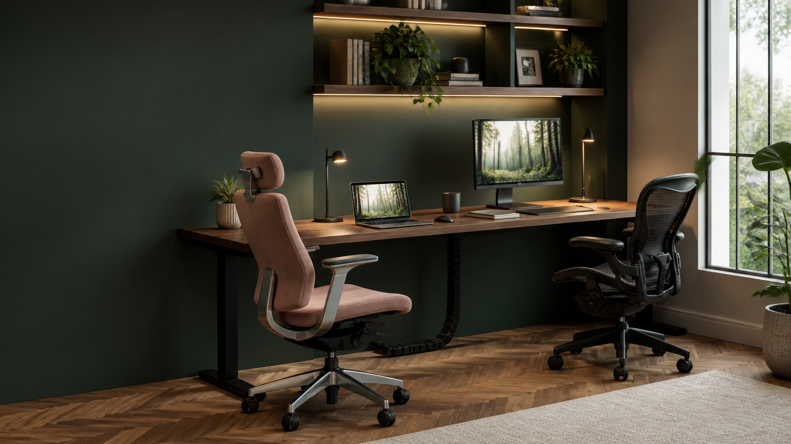

A shared workspace, thoughtfully built
Build your workspace.
Build what’s next.
For professionals, creators, developers, and AI builders who want a calmer place to turn ideas into real projects.
What Desk Atlas does
The workspace, edited.
A better desk is not a shopping list. It is a small system: visual
noise removed, ergonomics considered, and each useful object given a
deliberate home.
- Reduce clutter
- Improve ergonomics
- Choose better gear
- Build intentionally
CalmerLess visual noise, more useful space.
ConsideredGood materials and a reason to exist.
HonestBenefits, tradeoffs and clear disclosure.
ModernWorkspaces designed for how we work now.
Featured guide
Start with the friction you can see.
A visual desk upgrade is often a practical one: cables disappear,
screens sit correctly, and the surface becomes useful again.
Guide 01 · Premium workspace
16 Premium Desk Accessories That Actually Cut Clutter
A practical edit of desk shelves, lighting, storage and ergonomic
upgrades—with a reason to buy and a reason to hesitate for every
pick.
Read the guide →
Includes affiliate links. Learn more in our disclosure.
Explore by problem
Solve what gets in the way.
Start with the part of your workspace that pulls attention away from
the work.
The Desk Atlas standard
Products should earn their footprint.
We look beyond a product page. Every recommendation is judged by
whether it makes the desk more useful, more comfortable and less
distracting over time.
- Usefulness
- Design
- Footprint
- Quality
- Longevity
- Clutter reduction
- Value
Quick answers
Desk setup questions, answered.
What should I upgrade first?
Start with the problem you notice every day: cable control for
visual clutter, monitor position for discomfort, or lighting for a
dim workspace.
What makes a desk feel premium?
Proportion, materials, light and restraint. A premium setup
removes friction before it adds objects.
Are Desk Atlas links affiliate links?
Some links are affiliate links. We may earn a commission at no
extra cost to you; recommendations always include a tradeoff.
The next edit
Better work begins with a better surface.
New workspace guides and considered gear edits are on the way.
Explore the guides →